FEATURED DESTINATIONS
Beijing's Iconic Landmarks
Step into the heart of China's rich history through world-famous monuments, imperial palaces, and stunning architectural masterpieces.
VIEW ALL DESTINATIONS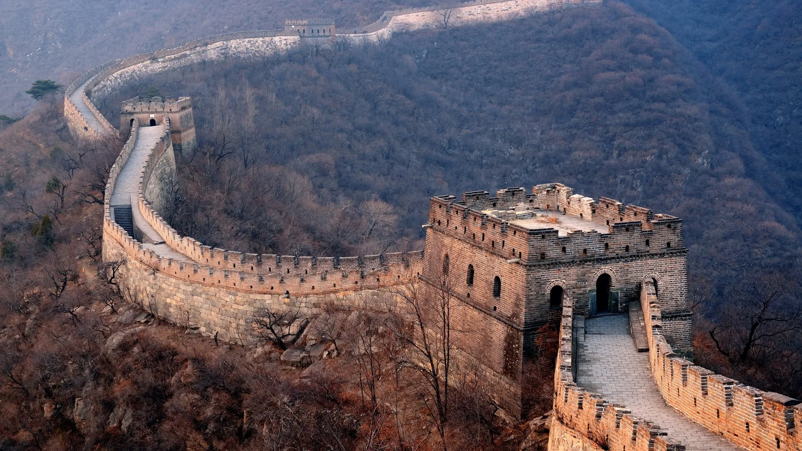
Great Wall
One of the world's most famous landmarks, built to protect ancient China and now a UNESCO World Heritage Site.
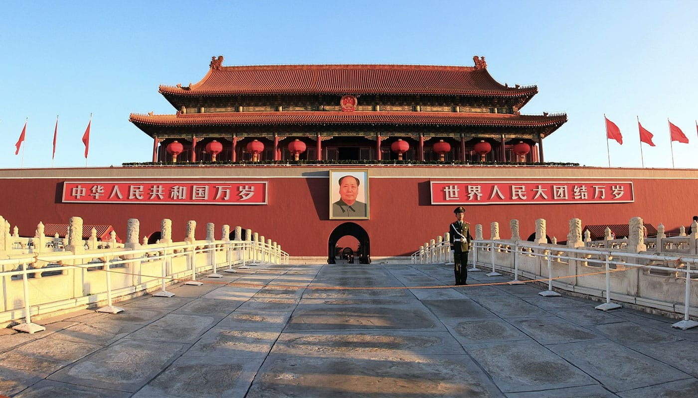
Forbidden City
A former imperial palace that served Chinese emperors for over 500 years and is now a UNESCO World Heritage Site.
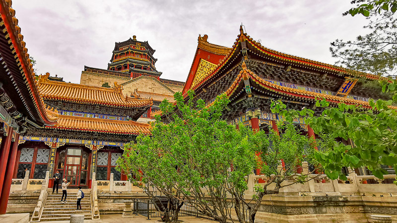
Summer Palace
A stunning imperial garden featuring beautiful lakes, traditional architecture, and peaceful landscapes.
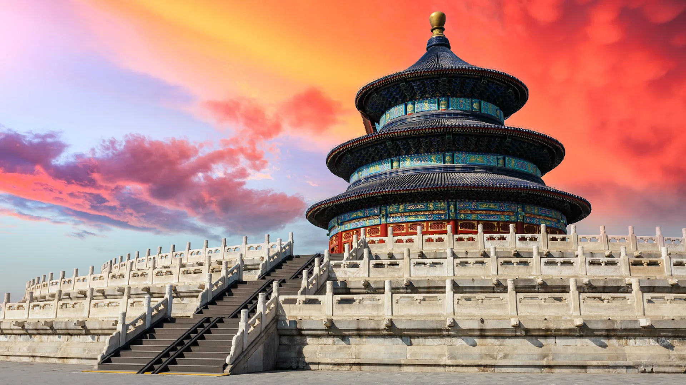
The Temple of Heaven
Chinese emperors used it to pray here for good harvests. It is famous for its beautiful architecture and cultural importance.
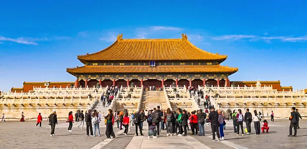
The Palace Museum
The Palace Museum is a historic Beijing museum, once an imperial palace, displaying ancient Chinese artworks and treasures.
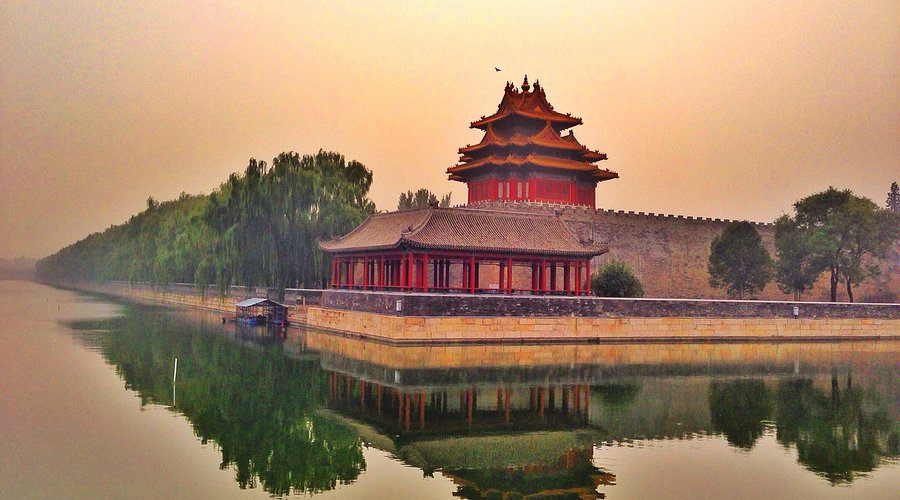
Jingshan Park
Jingshan Park is a historic park in Beijing known for its beautiful views of the Forbidden City and the city skyline.
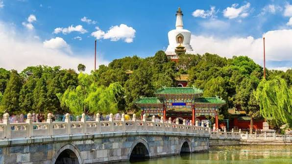
Beihai Park
Beihai Park is one of Beijing's oldest imperial gardens, famous for its peaceful lake, White Dagoba, and beautiful scenery.
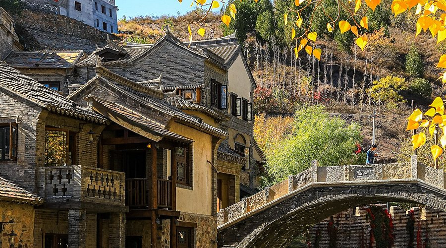
Gubei Water Town
Gubei Water Town is a charming town featuring traditional architecture, canals, and beautiful night views near the Great Wall.
ABOUT BEIJING
The Heart of China
Beijing is the capital of China and one of the world's oldest cities, with a history spanning over 3,000 years. Renowned for its rich cultural heritage, it is home to iconic landmarks such as the Great Wall, the Forbidden City, and the Temple of Heaven. Alongside its ancient history, Beijing is also a modern metropolis with impressive architecture, vibrant shopping districts, beautiful parks, and world-famous cuisine. Whether you're exploring historic palaces, tasting authentic Peking Duck, or experiencing the city's dynamic atmosphere, Beijing offers a unique journey where tradition and innovation come together.
FOODS IN BEIJING
Must-Try Local Dishes
Explore Beijing's most iconic dishes and uncover the stories behind every bite.
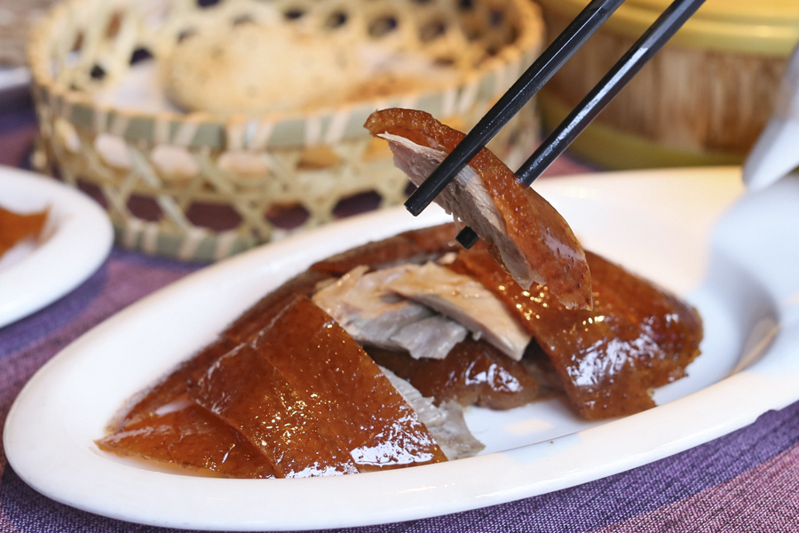
Peking Duck
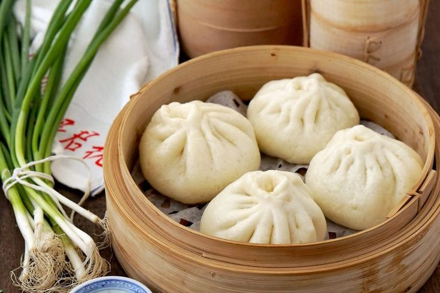
Baozi
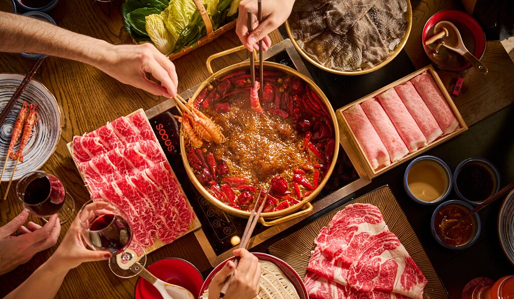
Beijing's Hotpot
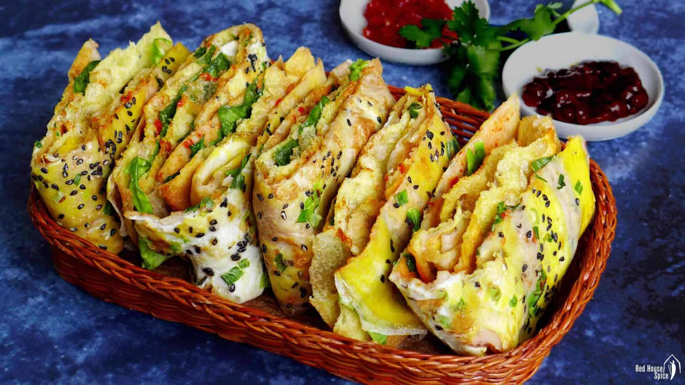
Jianbing
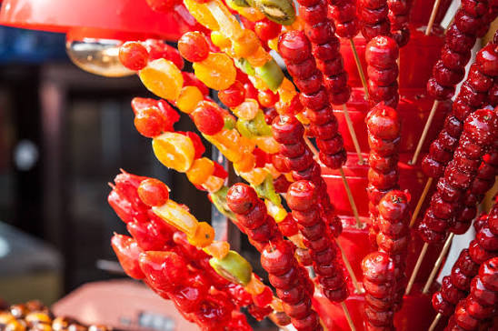
Tanghulu
Zhajiangmian
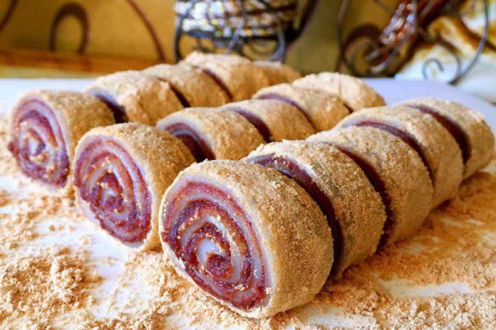
Lüdagun
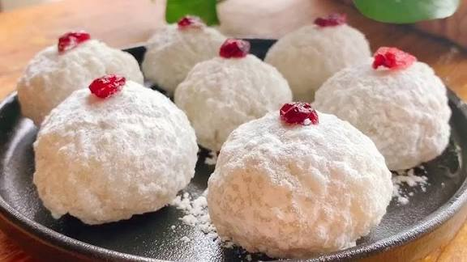
Aiwowo
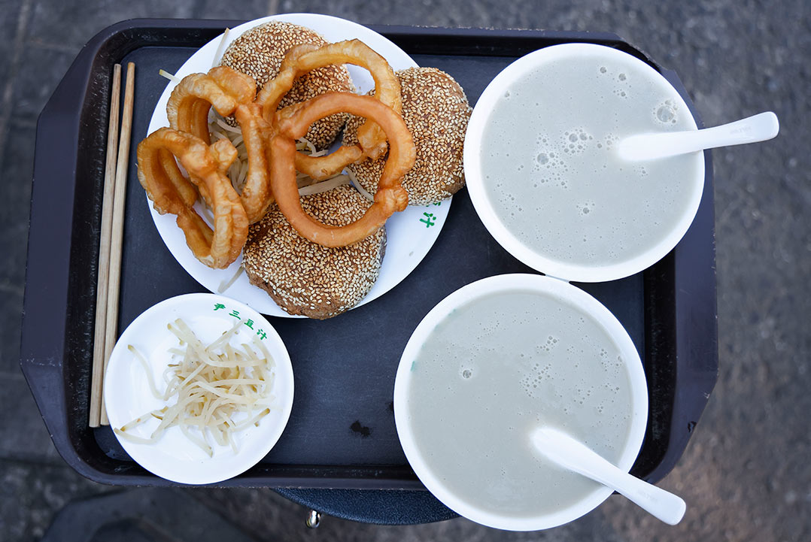
Douzhi
BEIJING'S CAMPUS
Discover Beijing Universities
Explore some of Beijing's most prestigious universities and the academic environments that shape future innovators.
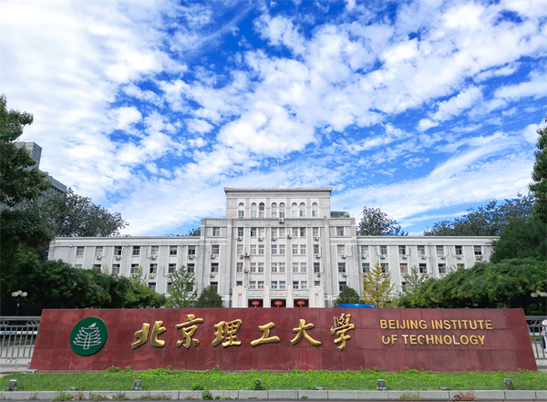
Beijing Institute of Technology
Beijing Institute of Technology is a leading science and engineering university in China, recognized for its strong focus on technology, automation, and advanced engineering. BIT combines academic knowledge with practical applications, preparing students to contribute to fields such as robotics, intelligent systems, and modern manufacturing.
Location: 5 Zhongguancun South Street, Haidian District, Beijing, China
Founded: 1940
Top Majors: Mechanical Engineering, Automation, Robotics, Aerospace Engineering, Vehicle Engineering, Information Technology Visit Website
Tsinghua University
Tsinghua University is one of China’s most prestigious universities, known worldwide for its excellence in research, science, engineering, and innovation. Located in Beijing, it provides a world-class academic environment with advanced facilities and strong global connections, attracting talented students from around the world.
Location: 30 Shuangqing Road, Haidian District, Beijing, China
Founded: 1911
Top Majors: Computer Science, Electrical Engineering, Mechanical Engineering, Artificial Intelligence, Architecture, Economics & Management Visit Website
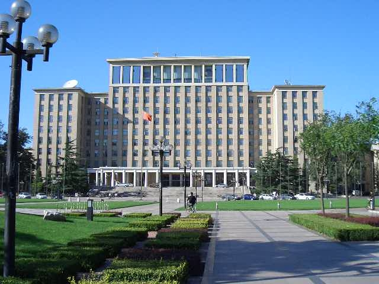

Peking University
Peking University is one of China’s oldest and most respected universities, famous for its academic excellence, research achievements, and beautiful traditional campus. Located in Beijing, it offers a diverse learning environment with strong programs across sciences, humanities, social sciences, and technology.
Location: 5 Yiheyuan Road, Haidian District, Beijing, China
Founded: 1898
Top Majors: Economics, Computer Science, Medicine, Physics, Law, International Relations, Chinese Language & Literature Visit Website
University of Science and Technology Beijing
University of Science and Technology Beijing is a leading engineering university with strong research achievements in materials, technology, and industrial development. It plays an important role in China’s engineering and manufacturing sectors.
Location: 30 Xueyuan Road, Haidian District, Beijing, China
Founded: 1952
Top Majors: Materials Science, Metallurgical Engineering, Mechanical Engineering, Automation, Computer Science Visit Website
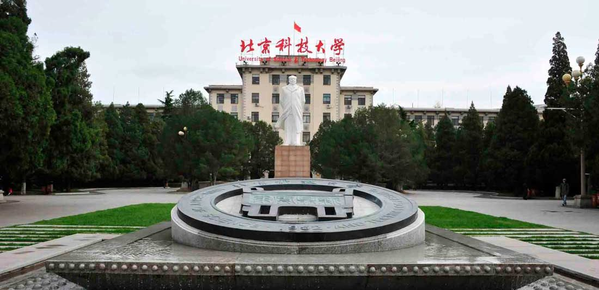
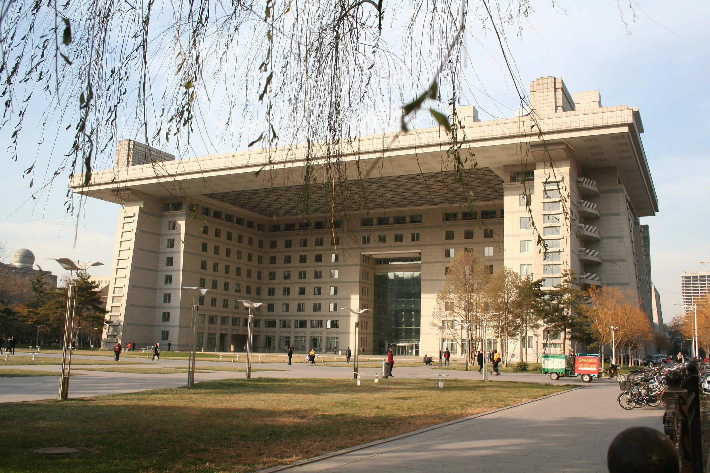
Beijing Normal University
Beijing Normal University is a highly respected university known for education, psychology, and humanities. It has a strong academic reputation and contributes significantly to research and social development.
Location: 19 Xinjiekouwai Street, Haidian District, Beijing, China
Founded: 1902
Top Majors: Education, Psychology, Chinese Language & Literature, Geography, Environmental Science Visit Website
GALLERY
Memories of Beijing
This gallery is a growing collection of memorable moments in Beijing, featuring iconic landmarks and photographs that celebrate the city's unique charm.
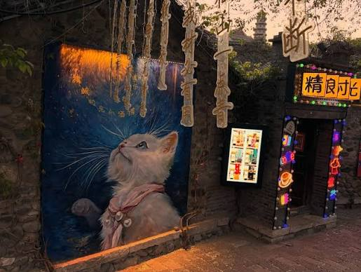
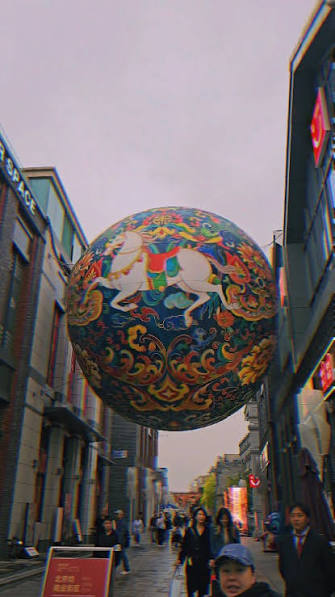
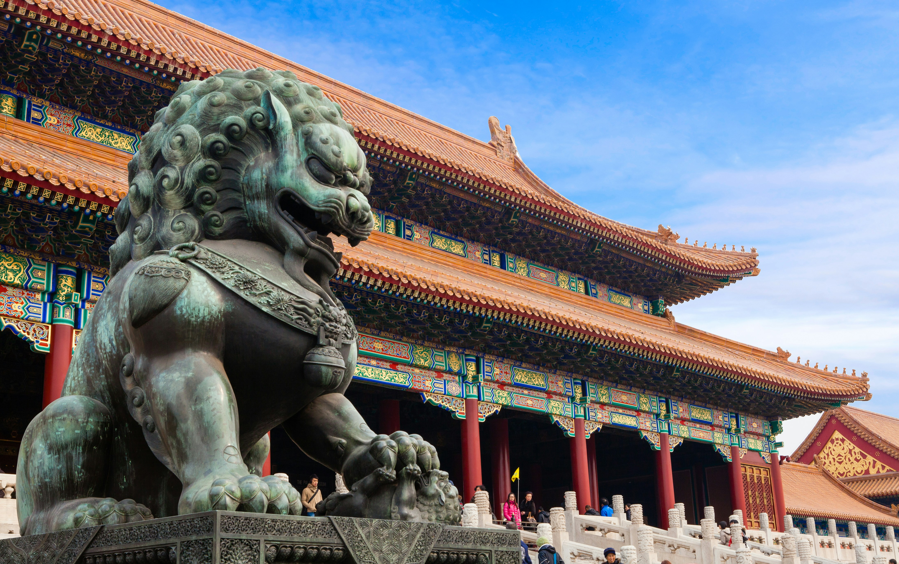
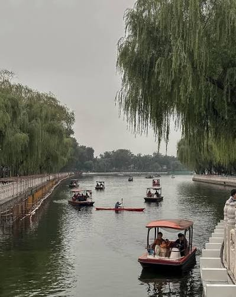


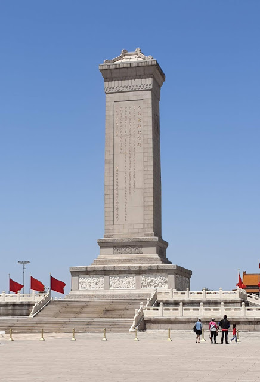


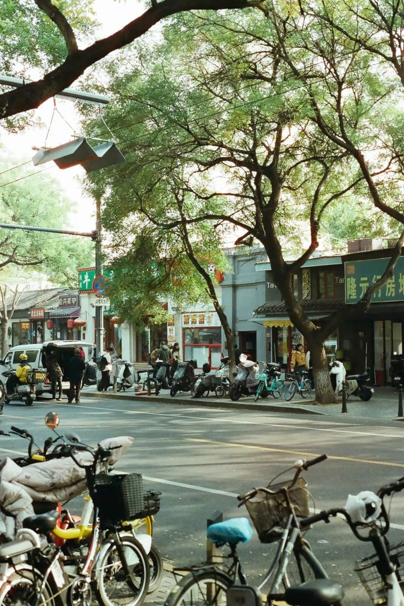

CONTACT US
Connect With Us!
Have Questions or feedback?
We'd love to hear from you!